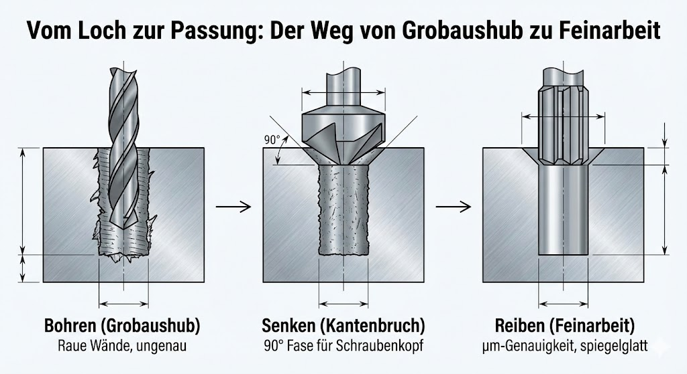
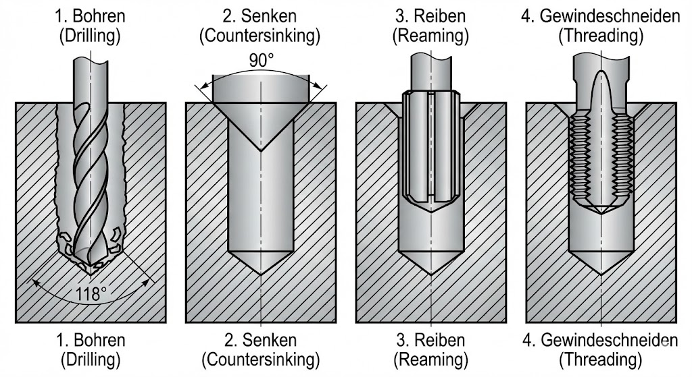
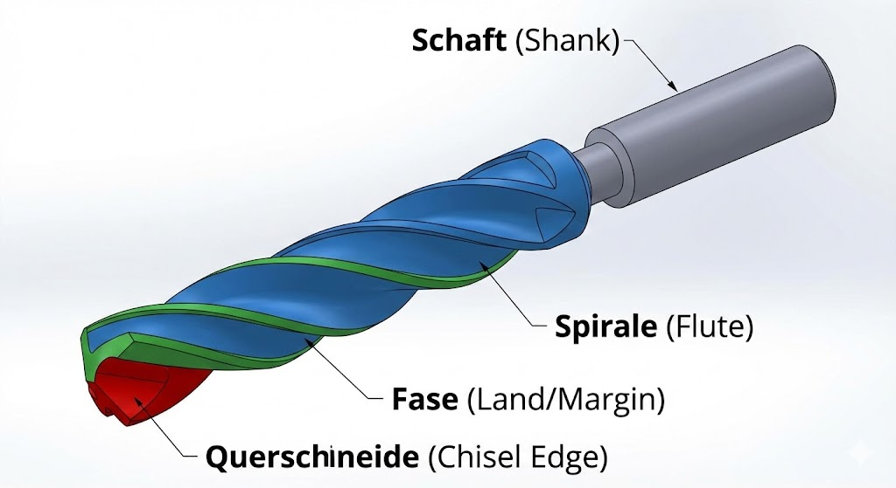
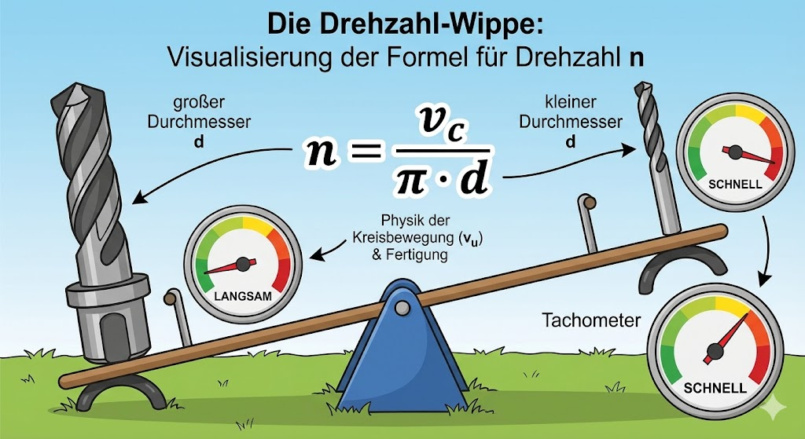

Skript-Bezug
TODO: Lege passende Bilder/Beispiele in LFB_mvp_hko/skript1/ ab (Schleifbild,
Kühlmittelzufuhr, Oberflächen) und verlinke sie hier.

Theorie / Begriffe
Schleifen (Feinstbearbeitung)
- Viele kleine Schneiden (Schleifkörner) → geometrisch unbestimmt.
- Hohe Oberflächenqualität möglich, aber Wärme kann kritisch sein.
- Typische Ziele: Masshaltigkeit, Formgenauigkeit, geringe Rauheit.
Kühlschmierstoffe (KSS)
- Kühlen: Temperatur senken, Anlauffarben/Brand vermeiden.
- Schmieren: Reibung senken, Oberfläche verbessern.
- Reinigen: Späne/Schleifstaub abführen, Scheibe frei halten.
- Schützen: Korrosionsschutz für Werkstück/Maschine.
Merksatz:
In der Praxis sind oft mehrere Funktionen gleichzeitig wichtig.

Interaktiv: KSS-Funktionen zuordnen
Ordne jeder Funktion die passende Wirkung zu.
| Funktion | Wirkung/Beispiel | Prüfen | Feedback |
|---|
—
Self-Check: Welche Maßnahme passt?
Wähle pro Situation die wichtigste KSS-Funktion (didaktisch vereinfacht).
